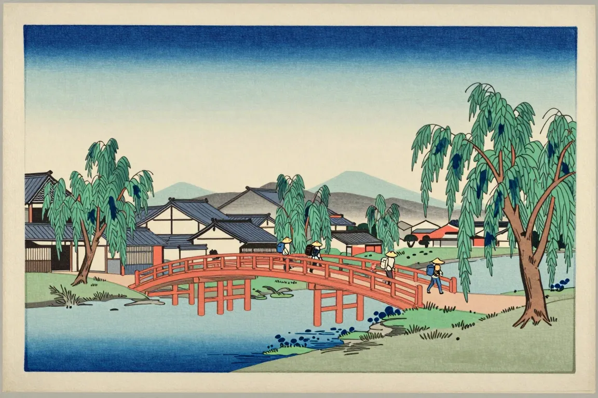

Рисунок приклеивают к доске из вишни, и резчик режет его. Печатник втирает водяной пигмент с одной доски на каждый цвет в влажную васи барэном. Цвета плоские и мягкие, и видно волокно дерева.

Главная идея
Набор деревянных досок, по одной на цвет, даёт полноцветную картину, когда печатник втирает жидкий водяной цвет во влажную бумагу и вручную держит приводку каждой доски.
Принципы дизайна
Печатайте основную доску суми первой. Держите её линию шириной 0,2–0,5 мм и непрерывной, чтобы резчик мог её повторить.
Давайте каждому плоскому цвету свою доску. Берите 3–12 досок и позволяйте краскам смешиваться там, где два цвета перекрываются.
Вырезайте на каждой доске две Г-образные метки приводки (кэнто), чтобы каждый цвет ложился на контур с точностью до 0,5 мм.
Делайте переход (бокаси), растирая краску на доске влажной тканью. Помещайте его на небо, воду и подол халата.
Оставляйте волокно дерева в больших плоских участках. Не прячьте его лишней краской.
Вдавливайте голую доску без краски в лист (карадзури) там, где нужна рельефная линия, например на снегу или воротнике.
Печатайте на тонкой влажной васи и растирайте оборот барэном круговыми движениями, пока цвет не уйдёт в волокно.
Антипаттерны
Толстый ровный контур вокруг каждой формы
Гладкий цифровой градиент без края ручной растирки